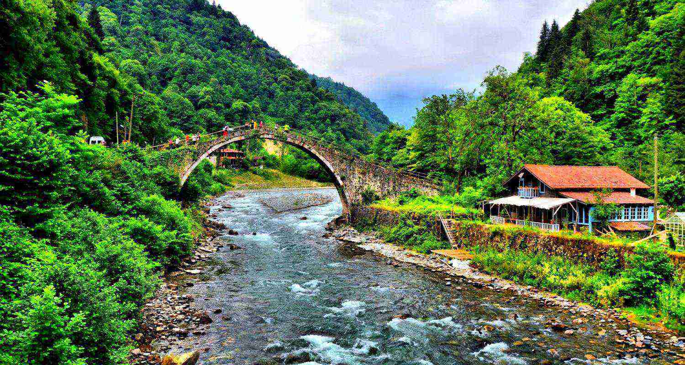

Sonra döndüm dedumki iyi ki Rize’liyim.

Rize’den yokuş aşşağı inmek kolaydır ama manzara tepeden seyredilir.

Marsta su bulsak çay demleriz ne de olsa Rize’liyiz Uşağum…
Sonra döndüm dedumki iyi ki Rize’liyim.
Rize’den yokuş aşşağı inmek kolaydır ama manzara tepeden seyredilir.
Marsta su bulsak çay demleriz ne de olsa Rize’liyiz Uşağum…
Rize’ye 45 km uzaklıkta olan Ardeşen, doğusunda Fındıklı, batısında Pazar, güneyinde Kaçkar Dağları ve Çamlıhemşin, kuzeyinde Karadenizle çevrilidir. İlçenin yüzölçümü 743 km², nüfusu 40.478’dir. Ardeşen'e bağlı olan 1 belde, 22 mahalle ve 38 köy bulunmaktadır.

Rize'nin turizm potansiyeli en yüksek olan ilçesidir. Gerek doğal güzellikleri, yaylaları, şelaleleri, buzul gölleri, gerek tarihi dokusuyla ilgi çekmektedir. İlçenin önemli tarihi eserleri Zil Kale, Kale-i Bala, taş kemer köprüler, camiler ve konaklardır. Çamlıhemşin doğa yürüyüşü, kar yürüyüşü, kampçılık, foto safari, rafting, heliski, dağcılık, balıkçılık gibi bir çok alternatif turizm etkinliği için elverişli olanaklara sahiptir.

Rize'ye 19 km uzaklıkta olan Çayeli güneyde Çamlıhemşin ve İkizdere, doğuda Pazar, batıda Rize Merkez ve kuzeyde Karadenizle çevrilidir. Yüzölçümü 473 km², nüfusu 42.450'dir. Nüfus itibariyle Rize’nin en büyük ilçesidir. İlçeye bağlı iki belde, 53 köy ve 33 mahalle bulunmaktadır.

Rize’ ye 7 km mesafede, batıda İyidere, doğuda Rize Merkez, güneyde İkizdere ile çevrili olan deniz kenarında kurulu bir ilçedir. Son yapılan nüfus sayımına göre nüfusu 7.806'dır.

Rize'ye 60 km. uzaklıktadır. Eski adı Viçe olan ilçe, doğuda Arhavi, batıda Ardeşen, güneyde Yusufeli ve kuzeyde Karadeniz ile çevrilidir. Yüzölçümü 409 km², nüfusu 16.241’dir. İlçede 22 köy ve 8 mahalle bulunmaktadır. Fındıklı’nın en önemli iki akarsuyu Çağlayan ve Arılı Dereleridir.
Rize'ye 15 km uzaklıkta olan ilçe doğuda Çayeli, batıda İkizdere, kuzeyde Rize Merkez ve güneyde Erzurum (Kaçkar Dağları) ile çevrilidir. Rize’nin iç kesiminde yer alır. Karos Dağı’nın güneyinde, Kıble Dağı ve Ayane Tepelerinin eteğinde kurulmuştur. İlçenin yüzölçümü 107 km², nüfusu 14.560’tır. Güneysu’ya bağlı 22 köy bulunmaktadır.

Rize'ye 57 km uzaklıkta, denizden 18 km içerde olan Hemşin, Rize'nin eski yerleşim yerlerinden biridir. Kuzeyde Pazar, batıda Çayeli, güneyde Çamlıhemşin'le komşudur. 1991 itibariyle Hemşin ilçe olmuştur. Rize'nin en küçük ilçelerinden biri olan Hemşin'in yüzölçümü 120 km², nüfusu 2.183’tür. İlçeye bağlı 4 mahalle ve 8 köy vardır.
Rize merkezine 56 km uzaklıktadır. Trabzon, İspir, Çamlıhemşin, Kalkandere, Çayeli ve Rize Merkez ile komşudur. İlçe nüfusu 6.511, yüzölçümü 898 km²'dir. İkizdere'ye bağlı 1 kasaba, 12 mahalle ve 28 köy bulunmaktadır. İkizdere, sarp ve derin dağların birleştiği bir vadide kurulmuştur. Çamlık ve Cimil Derelerinin birleştiği noktada kurulan ilçe merkezi, "iki dere" anlamında kullanılan İkizdere adını almıştır.

Rize merkezine 15 km mesafede, doğuda Derepazarı, batıda Of, güneyde Kalkandere'ye komsu olan bir sahil ilçesidir. İlçe yüzölçümü 25 km², nüfusu 8.679'dur. Eski adı ‘Aspet’ olan ilçe yeni ismini İyidere Çayı'ndan almıştır. 8 mahalle ve 7 köyden oluşmaktadır. Başlıca tarım faaliyeti çay üretimidir
Rize'nin batısında, kent merkezine 21 km uzaklıkta yer alan Kalkandere; İyidere, İkizdere, Rize Merkez ve Trabzon’un Of ilçeleriyle çevrilidir. İlçe nüfusu 12.517, yüzölçümü 95 km²'dir. İlçeye bağlı 1 belde ve 21 köy bulunmaktadır.
İl merkezine 37 km mesafede bulunan Pazar doğuda Ardeşen, batıda Çayeli, güneyde Çamlıhemşin ile Hemşin, kuzeyde ise Karadenizle çevrilidir. Yüzölçümü 315 km², nüfusu 30.824’tür. İlçeye bağlı 1 belediye, 10 mahalle ve 50 köy bulunmaktadı